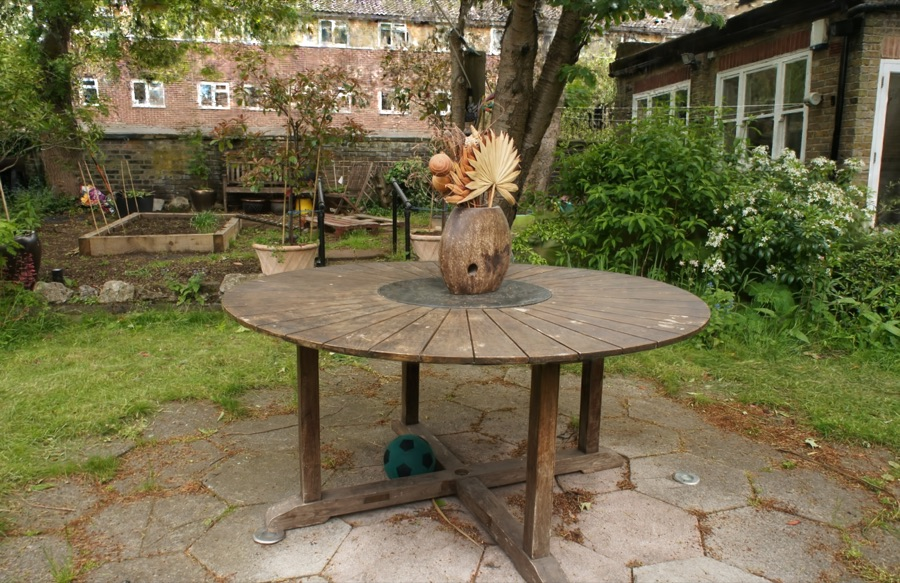
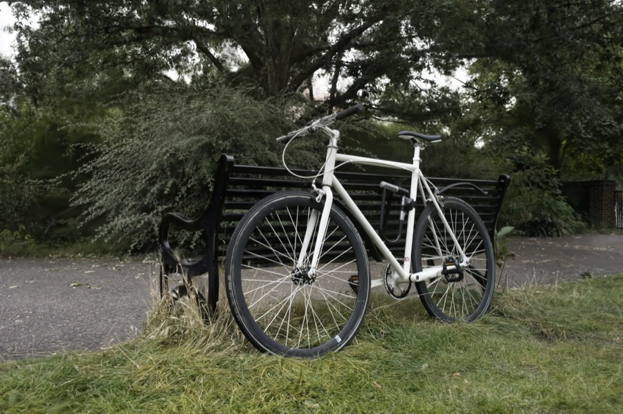

Executive Summary
Film a factory or a road for a few minutes, and that scene turns into a standard asset inside a simulator. That is what NVIDIA's neural reconstruction stack, NuRec, does. Its roots trace to Gaussian Splatting (3DGS), introduced at SIGGRAPH 2023. It represents a space as millions of translucent colored particles and optimizes them by pushing the pixel difference between the render and the real photograph back into the particles' parameters. Reconstruction (training) is heavy, but rendering the finished scene is rasterization — and therefore real-time. That was the decisive break from the NeRF era, which had to re-query a neural network for every viewpoint.
NuRec lifts that research into an industrial pipeline. An RTX renderer composites the Gaussian particle cloud and ordinary 3D assets (robot and object meshes) into a single frame, matching even depth occlusion (3DGRT, 3DGUT, PPISP), and standardizes the result into a single OpenUSD file (.usdz), so a "real place" is distributed as a file and assembled by reference. This flow, which returns real footage into a simulator stage, is called real-to-sim. Finished reconstruction datasets are already public on HuggingFace, and adoption is especially fast on the autonomous-vehicle side.
But a particle cloud captures appearance only. Physical interaction requires separate collision geometry; lighting is baked in at capture time, so relighting is hard; and quality depends on capture coverage. This is where the data view shifts. The moment a reconstruction becomes a distributable asset, the new bottleneck is not render speed but asset quality: reconstruction fidelity, capture coverage, and composition alignment. All three are axes you can diagnose and gate quantitatively, and this article follows where they come from.
Four numbers compress the picture. Reconstruction training time has dropped sharply, render speed for distorted cameras has reached real-time, and finished reconstruction datasets are already public at meaningful scale.
48h → 40min
Reconstruction training time
Training cost 3DGS cut versus NeRF-family baselines (Mip-NeRF360)
265 vs 52 FPS
3DGUT vs 3DGRT render speed
~5× on the same benchmark — distorted cameras in real time
1,500+ scenes
Public AV reconstruction dataset
~2.9TB, as of version 26.04 (still growing)
≥30 FPS
Real-time render of a finished scene
Rasterized render at 1080p (original 3DGS paper)
Roots: What Gaussian Splatting Changed
To understand NuRec, start with its root: 3D Gaussian Splatting (3DGS). 3DGS fills a single space with millions of tiny ellipsoids — 3D Gaussians. Each particle carries position, size, orientation, color, and opacity as parameters. Given photographs shot from many angles, the method projects these particles onto a view, renders them, measures how far the result diverges from the real photo, and pushes that error back into the particle parameters to correct them bit by bit. This process is called differentiable rendering: the pixel difference from the photo is itself the training signal.


The character of this approach splits into two phases. Building the scene — the reconstruction phase — is heavy, because millions of particles must be optimized iteratively. But once the scene is finished, drawing it to screen — the render phase — is light. It is rasterization, splatting particles onto the screen, an operation GPUs excel at, and it clears 30 frames per second at 1080p. This asymmetry, "training is slow, playback is fast," is the defining trait of 3DGS.
This is exactly where it broke from its predecessor, NeRF. NeRF packed a scene into a single neural network and had to re-query that network for every pixel of every viewpoint. Rendering was slow (seconds per frame), and moving the camera around freely felt sluggish. 3DGS is also tens of times faster to train: on the representative Mip-NeRF360 benchmark, the original paper finishes a reconstruction in about 40 minutes, whereas a NeRF-family baseline under the same conditions took up to 48 hours. That speed pulled 3DGS out of the lab, and the industrial renderer and asset standard layered on top of it is the NuRec we turn to next.
This blog has covered the fundamentals of 3DGS several times already, so instead of repeating them, this article focuses on the contrast in character: the asymmetry between heavy reconstruction and real-time rendering, and what changes once the finished output becomes a "distributable asset." For the detailed mechanics of 3DGS, the Isaac Sim · 3DGS synthetic-data report is a good companion read.
NuRec: The Two Things NVIDIA Adds to 3DGS
NuRec is not 3DGS itself. It is a stack NVIDIA built by adding two things on top of research-grade 3DGS: renderer integration and assetization. These two are the line that separates a "technique in a paper" from an "industrial pipeline."
2.1Renderer integration: particle cloud and mesh in one frame
The first axis is the RTX renderer's ability to composite the Gaussian particle cloud and ordinary 3D assets (robots, object meshes) into a single frame. It does not merely overlay them — it matches depth occlusion. Stand a robot-arm mesh on a reconstructed warehouse floor, and the shelving behind the arm is naturally hidden. Two lines of research make this compositing possible.
3DGRT handles Gaussians with ray tracing. Because it casts rays that strike the particles, it can represent secondary rays such as reflection and refraction, and distorted cameras such as fisheye and rolling shutter — but it is slow. 3DGUT uses a technique called the unscented transform to support the same distorted cameras and rolling shutter while keeping 3DGS-level rasterization speed. On a fisheye benchmark, the 3DGUT paper reports higher image quality (about +0.96 dB PSNR) using roughly a third as many particles as FisheyeGS (0.38M vs 1.07M). For real-to-sim, which has to handle the real camera distortion produced by smartphone, vehicle, and robot sensors, this combination is decisive. On top of that sits PPISP, which corrects the exposure, white-balance, and vignetting variance of real multi-camera capture, returning the reconstructed scene's photometry to what it was at capture time.
A table makes the division of labor across the three clear. Speed and camera expressiveness used to be a trade-off; 3DGUT is a design that tries to hold both at once.
| Method | Render principle | Distorted cameras · secondary rays | Speed (Mip-NeRF360) |
|---|---|---|---|
| 3DGS | Rasterization | Not supported (assumes pinhole camera) | Real-time (≥30 FPS) |
| 3DGRT | Ray tracing | Supported (reflection, refraction, fisheye, rolling shutter) | ~52 FPS |
| 3DGUT | Rasterization + unscented transform | Distorted cameras · rolling shutter supported | ~265 FPS |
Comparison on the same benchmark (Mip-NeRF360). FPS figures are cited from the reproduction table in the 3DGUT paper. The original 3DGRT paper reports higher numbers at other resolutions, so direct comparison here is limited to the values within this table. (arXiv:2412.12507)
2.2Assetization: a site becomes a single file
The second axis is assetization: standardizing the reconstruction into a single OpenUSD file (.usdz). Inside that file sits not only the Gaussian reconstruction but also a collision mesh for physics, an occupancy map for placing robots, and the capture camera's trajectory — all as one bundle. Autonomous-vehicle assets go further, adding a neural reconstruction volume, an OpenDRIVE map, and object-tracking data.
Why does assetization matter? Because the moment it becomes a usdz, a "real place" is distributed as a file and assembled by reference. Register one captured warehouse as an asset, and many simulations can pull it in by reference and place their own robots and objects on top. Because OpenUSD is already an industry standard, the reconstruction flows straight into existing Isaac Sim and Omniverse workflows. NuRec's real contribution is not render fidelity but that it ships footage inside this standard asset format.
The Real-to-Sim Pipeline: From Footage to Training Data
String the technical pieces together in order and they form a single pipeline. It starts with a few minutes of filming a real site and ends with robot training data coming out. At each step, the output becomes the input to the next.
- ① Capture — Film a factory, warehouse, store, or road for a few minutes with a smartphone or vehicle camera. The inputs are video, photos, and the camera trajectory.
- ② Reconstruction — Optimize the Gaussian scene with 3DGUT; PPISP corrects capture photometry. The outputs are the particle cloud and auxiliary meshes.
- ③ Assetization — Bundle the reconstruction into a single usdz: Gaussians + collision mesh + occupancy map + capture trajectory, all in one set.
- ④ Staging — Load the usdz into Isaac Sim / Omniverse by reference and set it up as a simulation stage.
- ⑤ Digital twin + physics sim — Place a robot digital twin on the photoreal backdrop and run the physics engine. Contacts, collisions, and forces are computed together with ground-truth labels.
- ⑥ Training-data generation — Extract labeled training data from the scene that fuses the photoreal backdrop with simulator physics.
The finished products of this pipeline are already public. NVIDIA distributes completed usdz reconstruction assets as datasets on HuggingFace. There are two tracks — one for robotics and one for autonomous vehicles — differing in scale and license. To get a feel for what a single AV scene is: roughly a 20-second driving segment reconstructed from six front, side, and rear camera views makes up one scene. Scenes like that are stacked by the thousands in the table below.
| Dataset | Scale | Contents | License · adoption signal |
|---|---|---|---|
| PhysicalAI-Robotics-NuRec | 9 environments, ~63GB | usdz + capture trajectory + occupancy map | CC-BY-4.0 (open) |
| PhysicalAI-Autonomous-Vehicles-NuRec | 1,500+ scenes, ~2.9TB | Neural reconstruction volume + OpenDRIVE map + object tracking | Gated license; monthly downloads several times the robotics set |
Based on the HuggingFace dataset cards (version 26.04). The AV dataset's scene count is expanding from the 900 announced by NVIDIA to over 1,500; we use the latest figure here.
Adoption is especially advanced on the autonomous-vehicle side. CARLA, the open-source AV simulator, folded in NuRec integration (25.07) with its 0.9.16 release, so a developer ecosystem on the order of 150,000 can now drop reconstruction assets straight in. Workflows that reconstruct driving logs to replay or vary real road scenes are entering AV validation and data generation as practical tools. Validation-infrastructure vendors such as Mcity, dSPACE, and Foretellix have also announced adoption.
Honest Limits
As attractive as real-to-sim is, reconstruction assets have three clear limits. The interesting part is that these limits become the very axes of quality control. Knowing what is weak tells you what to measure.
4.1A particle cloud holds only appearance
A Gaussian particle is a visual representation with color and opacity — it has no physical solidity or shape. Push a robot arm against a reconstructed box and the arm just passes through. To make physical interaction possible, you must supply collision geometry separately. That is exactly why the usdz bundles a collision mesh and an occupancy map. Appearance (Gaussians) and physics (meshes) are stored separately: render from the Gaussians for photorealism, simulate on the meshes.
4.2Lighting is baked in at capture time
Reconstruction etches the light at capture time straight into the particle colors. So relighting — turning a warehouse shot on a cloudy afternoon into midday sun, or switching lights on and off — is hard. Transforming the time of day or the weather of a scene is not the job of reconstruction itself; it passes to world-model-family techniques. NuRec is strong at faithfully capturing "the site exactly as shot" and weak at imagining "the site under different conditions."
4.3Quality is tied to capture coverage
Any angle the camera never captured shows up in the reconstruction as a hole or as leftover drifting particles (floaters). Areas that are sparsely observed or move fast (night, fog, high-speed driving, a pedestrian's legs) are the known low-quality cases. The very fact that NVIDIA maintains a separate NuRec Fixer (based on Difix3D+) to inpaint artifacts is evidence that reconstructions come out with holes. In the end, a reconstruction's reliability depends heavily on how evenly it was filmed.
Each of the three limits leads to one quantitative axis. The appearance-only problem is managed through composition alignment (matching the scale and depth of robots and backdrop); the difficulty of relighting through the limit on transformation range; and coverage dependence through fidelity and coverage metrics (PSNR, SSIM, unobserved angles). Knowing the limits is the same as knowing what to gate.
The Complementary Map: Where Four Pieces Interlock
To put NuRec in its place, you have to see its relationship with neighboring technologies. The picture of making physically consistent synthetic data is built from four pieces pointing in different directions. Of the four, real-to-sim and sim-to-real point in exactly opposite directions.
- Physics simulator — the ground-truth ledger that computes contacts, collisions, and forces together with ground-truth labels. This is where training-data labels come from.
- Sim-to-real — a world model (Cosmos Transfer and the like) transforms synthetically generated scenes into a photoreal style. The direction is from simulator to reality.
- Real-to-sim — NuRec returns real footage into simulator assets. The direction is from reality to simulator — the exact opposite of sim-to-real.
- Quality proof — quantitatively validates and gates whether the data the other three produce is usable for training. The glue that keeps the remaining pieces physically consistent.
The diagram below shows these four pieces interlocking into one pipeline. NuRec (real-to-sim) fills the "reality to simulator" piece that had long been empty in this picture.
This map connects to the thesis of the GraphicsForPhysicalAI hub Pebblous covered earlier: that "differentiable rendering is the new data infrastructure." NuRec is the industrial, real-world evidence for that claim, and precisely the piece that fills the real-to-sim axis the hub had not yet completed.
A Shift in the Data View: What to Validate When a Reconstruction Becomes an Asset
Look back over the story so far through a data lens and one shift emerges. The question of the 3DGS era was "is the render real-time?" The answer is already in: yes. But the moment the reconstruction becomes a distributable asset called usdz, the question changes to "is this asset usable for training?" The bottleneck has moved from render speed to asset quality.
Asset quality is not a vague phrase. The three limits from the previous section translate directly into three diagnostic axes.
- Reconstruction fidelity — how close the reconstructed scene is to reality. Measured with quantitative metrics like PSNR, SSIM, and LPIPS. An axis you can compare numerically on standard benchmarks.
- Capture coverage — which angles went unobserved. Unobserved angles show up as holes and floaters, so coverage sets the boundary of the region where the reconstruction is trustworthy.
- Composition alignment — whether the robot and object meshes laid over the reconstructed backdrop match it in scale and depth. When they don't, the physics sim and the training labels go wrong together.
What matters is that all three axes are diagnosable and gateable. A defect from a low-quality case (night, fog, high-speed driving, a pedestrian's legs) propagates directly into a defect in the training asset, and becomes a performance risk in the model trained on it. So for a team adopting the "build a sim stage from a few minutes of footage" workflow, what will guarantee the quality of that stage becomes an immediate practical task. In the era where reconstructions become assets, data quality moves from a problem of labeling ground truth to a problem of validating the reconstruction itself and passing or rejecting it.
Why Pebblous Is Watching This
NuRec fills a blank on the Physical AI data map Pebblous has been drawing. We have covered Isaac Sim (synthetic-data generation), OpenUSD (the asset standard), and world models (sim-to-real) in turn — but the real-to-sim piece, "returning real footage into 3D assets," was empty. As NuRec fills that spot, the four-piece picture of physics simulator, sim-to-real, real-to-sim, and quality proof interlocks physically.
From a data-quality standpoint, the question this technology raises is clear. The moment a reconstruction becomes a distributable asset, the center of gravity of validation shifts from "is the render real-time?" to "is this asset usable for training?" Reconstruction fidelity, capture coverage, and composition alignment are all quality axes you can diagnose and gate. This overlaps precisely with the language Pebblous has used in DataClinic and AI-Ready Data. The more robotics and AV teams adopt the "build a sim stage from a few minutes of footage" workflow, the more how to guarantee that stage's quality becomes a training-performance risk.
More broadly, NuRec is industrial, real-world evidence for the proposition that "differentiable rendering is the new data infrastructure." Footage has started to be distributed inside a standard asset format, and proving asset quality on top of that infrastructure emerges as the next task.
Editor's Note. This article is an overview organized around the technical facts of NuRec. The three quality axes noted above (fidelity, coverage, composition alignment) touch the frame through which Pebblous views reconstruction-asset validation, but the concrete diagnostic and gating methodology is beyond this article's scope. We cover it in a separate piece.
References
Academic
- 1.Kerbl, B., Kopanas, G., Leimkühler, T., Drettakis, G. (2023). 3D Gaussian Splatting for Real-Time Radiance Field Rendering. ACM ToG 42(4), SIGGRAPH 2023. arXiv:2308.04079. Project page
- 2.Moenne-Loccoz, N., et al. (NVIDIA Toronto AI Lab). 3D Gaussian Ray Tracing (3DGRT). arXiv:2407.07090. Project page
- 3.Wu, Q., et al. (NVIDIA). 3DGUT: Enabling Distorted Cameras and Secondary Rays in Gaussian Splatting. CVPR 2025. arXiv:2412.12507. Project page
Platform · Data
- 4.NVIDIA. Isaac Sim Documentation (NuRec). docs.isaacsim.omniverse.nvidia.com
- 5.HuggingFace. nvidia/PhysicalAI-Robotics-NuRec (9 environments, ~63GB, CC-BY-4.0). Dataset card
- 6.HuggingFace. nvidia/PhysicalAI-Autonomous-Vehicles-NuRec (1,500+ scenes, ~2.9TB). Dataset card
- 7.CARLA. Release 0.9.16 / NVIDIA NuRec integration. carla.org
Pebblous adjacent
- 8.Pebblous. GraphicsForPhysicalAI (hub). blog.pebblous.ai/project/GraphicsForPhysicalAI/en/
External links and figures were verified against their source rendering before publication. Dataset scale and download figures are as of version 26.04; because the datasets are still expanding, they may differ from the latest values.